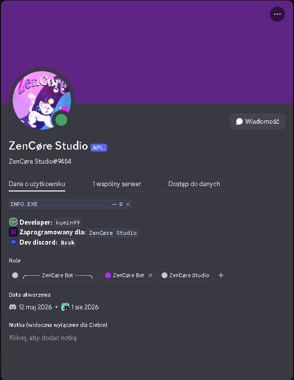
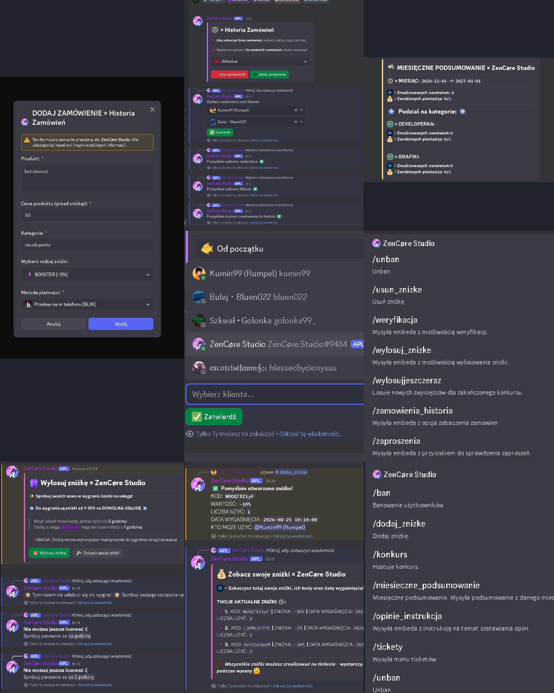
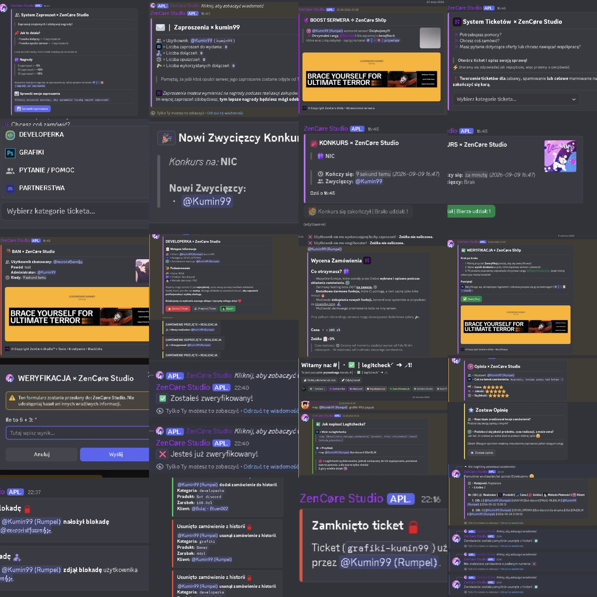

O MNIE
Cześć! Jestem Kumin99, ale tak naprawdę jest to tylko mój pseudonim - moje prawdziwe imię to Filip.
Jestem młodym developerem, programującym z pasji do kodu oraz z zamiłowania do tworzenia.
Programuje od prawie 2 lat, znam i posługuję się językami programowania takimi jak Python, Java, HTML oraz CSS.
W swoich programach wykorzystuję także bazy danych, korzystając z systemów zarządzania bazami danych (DBMS), takich jak MySQL i SQLite.
Chętnie poznaje nowych ludzi i przyswajam nową wiedzę. Liczę na przyjemne projekty z fajnymi ludźmi.
Bazy Danych
W swoich programach wykorzystuję bazy danych, pisane w systemach zarządzania bazami danych (DBMS) takich jak MySQL czy SQLite.

Backend Development
Python jest moim głównym językiem programowania, w którym mam prawie 2 lata doświadczenia. Znam także Javę.
Lider Projektów
Mam doświadczenie w kierowaniu zespołem i rozdzielaniu zadań. Poprowadziłem duży szkolny projekt inżynierski, którego celem było zbudowanie pojazdu napędzanego wiatrem.
MOJE PROJEKTY
Boty discord
Bot dla projektu "ZenCøre Studio"
Bot został wykonany: 27.08.2026



KONTAKT
DISCORD: kumin99
MAILA: sspfilio27@gmail.com